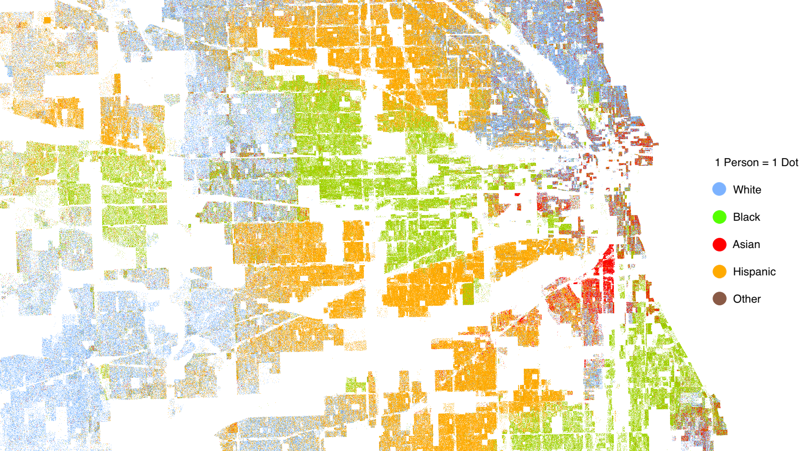

Schelling's Model of Racial Segregation
Racial residential segregation has existed for centuries and across different societies, often actively enforced by law. This was for example the case in the 19th century's United States with the Jim Crow laws. When the U.S. Supreme Court declared them unconstitutional in 1954, many expected segregation would disappear. This however was not the case: to the contrary, despite much effort and investment, segregation still remains a major issue in the U.S. and elsewhere to this date [1].
Even in absence of laws enforcing segregation, this can be caused by a number of factors including housing and loan discrimination, prejudice, etc. Yet another factor however, one which was not considered at the time, is that of emergence, that is the existence of macro-characteristics which are generated by the micro-level interactions of a complex system's constituents. In 1971, Thomas Schelling devised one of the earliest examples of agent-based models [3] suggesting that segregation could arise even when individuals would not mind being surrounded by different races, as long as they still desire to have at least a small fraction of people of the same racial background as neighbours. Despite the agents' willingness to accept a more diverse neighbourhood, segregation emerges nonetheless from the social interactions of different individuals. Strikingly, even weak local preferences can lead to major global phenomena emerging from the network of individual micro-interactions. Moreover, these emergent macro-regularities feed back onto the individual agents, constraining their choices and behaviour.
As we shall see, in spite of its simplicity, Schelling's model generates fascinating and complex dynamics, with multiple and far from intuitive equilibria.
A simple model of segregation
One of the simplest versions of Schelling's segregation model consists in a stylised representation of a residential area where individuals repeatedly make relocation decisions based on the characteristics of their immediate neighborhood.The model considers two types of agents, say blue and red, which might represent different races, ethnicities, economic status, etc., and a \(N\times N\) grid of residential locations over which a number \(N_a\le N^2\) of agents are initially randomly allocated. The agents' population is characterised by the fraction \(N_{b/r} = N_b / N_r\) of blue to red types such that \(N_a = N_b + N_r\), and assumed to be constant, so that at any given time one will have \(N_v = N^2 - N_a\) vacant residential locations. Each agent \(i\) is then characterised by a satisfaction parameter \(S_i\) given by the fraction of neighbours of the same type. Notice that the number of neighbours might depend on whether one considers fixed or periodic boundary conditions as well as on vacant locations which are not counted in the computation of \(S_i\).
Dynamics
The dynamics is set by a global tolerance parameter \(\tau\) denoting the maximum fraction of neighbours of a different type each agent is willing to accept before it decides to relocate. Therefore, every agent with \(S_i < 1 - \tau\) will relocate at random into a different vacant residential location. The dynamics continues until a stable equilibrium is found (if it exists) where all agents are satisfied.As a consequence individuals' decisions are based exclusively on personal considerations based on the characteristics of the local neighbourhood they currently reside in. However, the act of relocation, despite being based on local parameters, ends up having global effect, since the random relocation of one agent might make discontent other agents which were previously satisfied.
Alternative versions of the model might consider a different behaviour whereby dissatisfied agents would move to the closest vacant location, instead of a random one, or to the best available location, or to the nearest location meeting the threshold \(1-\tau\). Yet another behavioural rule would allow individuals to move only if a better location is available. Notice that different rules might have important repercussions on global dynamics. Consider as an example the version in which all dissatisfied individuals move at random (which is what we shall employ hereafter). Clearly for sufficiently low tolerance \(\tau\) and/or sufficiently low rate of vacant properties no static equilibrium will exist, since there will always be at least one individual unsatisfied with its location and unable to find another suitable one. On the other hand a static equilibrium always exist when considering individuals relocating only if a better location is found.
Simulations
In the following we employ a Python implementation of Schelling's segregation model on an \(N\times N\) grid with \(N=60\), assuming \(10\%\) of all properties being vacant at any given time, a \(1\)-to-\(1\) ratio of red to blue agents. Let us start by defining the system's parameters:
N = 60 # Grid will be N x N
SIM_T = 0.4 # Similarity threshold (that is 1-τ)
EMPTY = 0.1 # Fraction of vacant properties
B_to_R = 1 # Ratio of blue to red peoplenumpy.array of size (N, N),
encoding residential locations occupied by blue agents as 0,
those occupied by red agents as 1,
and vacant properties as -1.
Now one needs two main functions: a
rand_init function
for the random initialisation of the system matrix M, and a evolve function
to impose on the system the dynamics described above.
The former is easily implemented as
import numpy as np
def rand_init(N, B_to_R, EMPTY):
""" Random system initialisation.
BLUE = 0
RED = 1
EMPTY = -1
"""
vacant = N * N * EMPTY
population = N * N - vacant
blues = int(population * 1 / (1 + 1/B_to_R))
reds = population - blues
M = np.zeros(N*N, dtype=np.int8)
M[:reds] = 1
M[-vacant:] = -1
np.random.shuffle(M)
return M.reshape(N,N)M with the kernel
KERNEL = np.array([[1, 1, 1],
[1, 0, 1],
[1, 1, 1]], dtype=np.int8)
\[
(K\star M)_{i,j} = \sum_{\substack{
a\in\{-k_x,\ ...,\ k_x\}\\
b\in\{-k_y,\ ...,\ k_y\}}}
K_{a+k_x,b+k_y}\ M_{i+a,j+b}.
\]
Therefore, each element of the convolution \(K\star M\) contains the sum
of all neighbouring values.
With this in mind, we can now write a function to take care of the dynamical evolution of the system:
from scipy.signal import convolve2d
def evolve(M, boundary='wrap'):
"""
Args:
M (numpy.array): the matrix to be evolved
boundary (str): Either wrap, fill, or symm
If the similarity ratio of neighbours
to the entire neighborhood population
is lower than the SIM_T,
then the individual moves to an empty house.
"""
kws = dict(mode='same', boundary=boundary)
B_neighs = convolve2d(M == 0, KERNEL, **kws)
R_neighs = convolve2d(M == 1, KERNEL, **kws)
Neighs = convolve2d(M != -1, KERNEL, **kws)
B_dissatified = (B_neighs / Neighs < SIM_T) & (M == 0)
R_dissatified = (R_neighs / Neighs < SIM_T) & (M == 1)
M[R_dissatified | B_dissatified] = - 1
vacant = (M == -1).sum()
N_B_dissatified, N_R_dissatified = B_dissatified.sum(), R_dissatified.sum()
filling = -np.ones(vacant, dtype=np.int8)
filling[:N_B_dissatified] = 0
filling[N_B_dissatified:N_B_dissatified + N_R_dissatified] = 1
np.random.shuffle(filling)
M[M==-1] = fillingboundary argument of
scipy.signal.convolve2d provides an easy way to switch
from fixed ('fill') to periodic ('wrap') boundary conditions.
In the following we shall stick to the latter.
Finally we are able to run simulations: Fig.4 shows the evolution from a randomly initialised state with a high degree of integration towards a segregated configurations where each region is separated by a layer of vacant locations. Notice that because of the periodic boundary conditions, the reds almost form a single blob, with the exception of a small island in the center left of the computational grid and similarly for blue agents.
References
[1] "Racial Segregation Is Still a Problem", Michael Cassidy, The Century Foundation, July 2013[2] "The Racial Dot Map", Demographics Research Group, Weldon Cooper Center for Public Service, University of Virginial, 2017
[3] "Dynamic Models of Segregation", Thomas C. Schelling, Journal of Mathematical Sociology, 1971, Vol.1, pp143-186